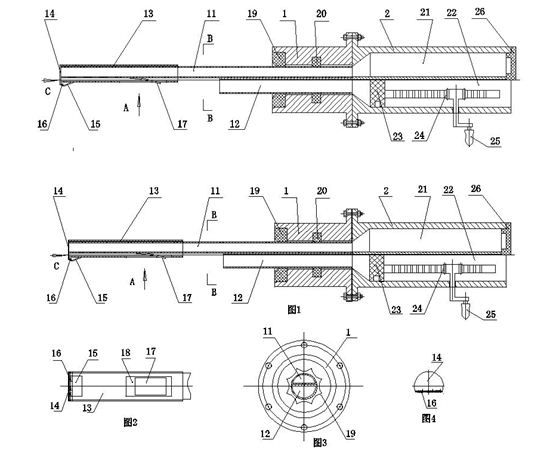

Patent No.201020277544.X First inventor
At present, all gel ink pen are disposable products without pouring the ink repeatedly. And most empty gel ink pen are difficult to recovery, so the slathering of the gel ink pen is wasted and brings serious and potential environment pollution problems.
This invention displays a kind of ink irrigator of the gel ink pen. The end part of the shell contains ink cavity which is independent and coordinate on the axis and gas chamber which has a piston controlled by a drive mechanism with gears and racks. There is a sealed device between the hole before the shell and the oil-guided tube and air-guided tube. Oil-guided tube connected with ink cavity while the air-guided tube connected with air cavity. The length of oil-guided core is longer than the air-guided core. There is a protected cap on the front-end of the oil-guided core. So it can pour the ink in gel ink pen repeatedly and avoid the wasting of resource.
